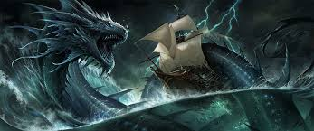

The greatest sea monster...
is a creature with the form of a sea serpent from Jewish belief, referenced in the Hebrew Bible in the Book of Job, Psalms, the Book of Isaiah, and the Book of Amos.
The Leviathan of the Book of Job is a reflection of the older Canaanite Lotan, a primeval monster defeated by the god Baal Hadad. Parallels to the role of Mesopotamian Tiamat defeated by Marduk have long been drawn in comparative mythology, as have been wider comparisons to dragon and world serpent narratives such as Indra slaying Vrtra or Thor slaying Jörmungandr,[1] but Leviathan already figures in the Hebrew Bible as a metaphor for a powerful enemy, notably Babylon (Isaiah 27:1), and some 19th century scholars have pragmatically interpreted it as referring to large aquatic creatures, such as the crocodile.[2] The word later came to be used as a term for "great whale", as well as for sea monsters in general.
The Leviathan is mentioned five times in the Tanakh, in Job 3:8, Job 40:15–41:26, Psalm 74:14, Psalm 104:26 and Isaiah 27:1.
Job 41:1–34 is dedicated to describing him in detail: "Behold, the hope of him is in vain; shall not one be cast down even at the sight of him?"[10] In Psalm 104, God is praised for having made all things, including Leviathan, and in Isaiah 27:1, he is called the "tortuous serpent" who will be killed at the end of time.
The mention of the Tannins in the Genesis creation narrative[11] (translated as "great whales" in the King James Version)[12] and Leviathan in the Psalm[13] do not describe them as harmful but as ocean creatures who are part of God's creation. The element of competition between God and the sea monster and the use of Leviathan to describe the powerful enemies of Israel[14] may reflect the influence of the Mesopotamian and Canaanite legends or the contest in Egyptian mythology between the Apep snake and the sun god Ra. Alternatively, the removal of such competition may have reflected an attempt to naturalize Leviathan in a process that demoted it from deity to demon to monster!
so ..my best advice is that this is not a creature to call a pet! since its really known to be evil..but in general also,it still remains as one of the most feared creatures by man..
here is a short brief of how it looked..
guys ,thats seems to have reached its limit but if you wanna get to know more about this fictional creatures,
you can holla me at 254759403759
or get to know more by following this link..